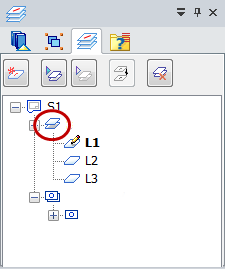

Control layer display and locate layers
The commands referenced below are available when you select an individual layer on the Layers tab.
|
To |
Do this |
|
Show the contents of a layer. |
On the layer shortcut menu, click Show. |
|
Show the contents of a layer on all sheets in the document. |
On the layer shortcut menu, click Show Everywhere. |
|
Hide the contents of a layer. You cannot hide the active layer. Tip:
Hidden layers display this icon: . |
On the layer shortcut menu, click Hide. |
|
Hide the contents of a layer on all sheets in the document. |
On the layer shortcut menu, click Hide Everywhere. |
|
Make a layer the active layer. Tip:
The active layer displays this icon: . |
Double-click the layer entry that you want to activate. You also can choose the Make Active command on the layer shortcut menu. |
|
Set an active layer and display only the contents of that layer. Tip:
Turns off all other layers on the current drawing sheet. |
On the layer shortcut menu, click Show Only. For more information, see Display a layer or layers and hide all others. |
|
Make the elements on a layer locatable with the cursor. |
On the layer shortcut menu, click Make Locatable. |
|
Make the elements on a layer non-locatable with the cursor. Tip:
A non-locatable layer displays this icon: . |
On the layer shortcut menu, click Make Non-locatable. |
Two additional display commands are available on the Layers collection node, which is circled in the following image:

|
To |
Do this |
|
Expose the elements on all layers in the document. |
|
|
Hide the elements on all layers in the document. |
|
How do I
Display the active layer nameFind the layer of an element
Display or hide a layer
Display a layer or layers and hide all others
Change the active layer
Create a new layer
Delete one or more layers
Rename a layer
Sort blocks, layers, or groups
Move an element to another layer
Add properties to a layer
Learn more
How to use the drawing toolsUsing the 2D sketching context toolbar
Layers overview
Naming layers
Assigning elements to layers
Displaying layers
Using the Auto-Hide layer
Look up more details
Layer status iconsMove Elements dialog box
Layer Properties dialog box